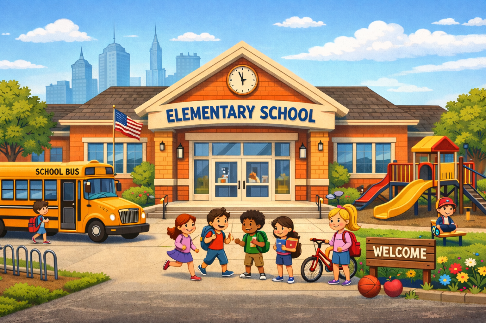
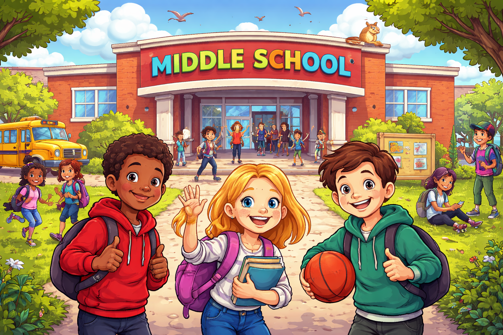

ElementarySchool
I attended elementary school where I built my basic foundation in subjects like mathematics, English, & science.
During this time, I also developed important skills such as reading, writing, & working with others.
My teachers were very supportive & helped me grow both academically & personally.
Elementary school was an important stage that prepared me for the next level of education.
You can click the image to discover more

MiddleSchool
In middle school, I continued to expand my knowledge & improve my academic skills.
I was introduced to new subjects & more challenging coursework, which helped me become more independent in my studies.
I also participated in school activities & made many new friends.
This experience helped me develop responsibility & confidence in my abilities.
You can click the image to discover more
HighSchool
High school was a very important part of my educational journey, where I focused more on my academic goals & future career plans.
I studied a variety of subjects that helped me develop critical thinking & problem-solving skills.
I also learned how to manage my time & handle more responsibilities.
My high school experience prepared me for higher education & helped shape my future ambitions.
You can click the image to discover more